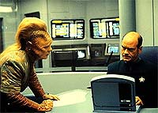
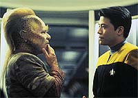
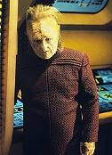
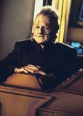
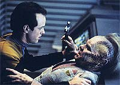
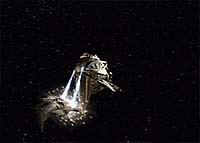

|
MANCHETE
DO EPISDIO
Episdio tenta desenvolver Neelix,
mas s acaba reduzindo Tom Paris
Episdio
anterior | Prximo
episdio
Sinopse:
Data Estelar: 49485.2.
 Neelix
transmite as notcias dirias a bordo da Voyager, como parte do
seu trabalho de "oficial da moral". Quando ouve o rumor de
que algum na tripulao est deixando a nave para se juntar a
um comboio Talaxiano, notifica a capit e Tuvok. Nem um pouco
surpreendidos, os dois revelam a Neelix que Tom Paris decidiu deix-los,
aps um conturbado perodo de m conduta e insubordinao.
Pouco tempo mais tarde, Tom parte.
Enquanto Janeway pondera um substituto para Paris, Neelix se ocupa
cobrindo um pequeno acidente na engenharia que fere trs
tripulantes, incluindo Michael Jonas, o espio de Seska a bordo da
Voyager. Ademais, a nave Talaxiana para a qual Tom se transferiu
notifica a capit de que foi atacada pelos Kazon-Nistrim, levando o
tenente como refm.
 Seska
d as boas-vindas a Paris a bordo da nave Kazon e tenta convenc-lo
a se unir faco Nistrim. Na Voyager, Neelix se pergunta como
os kazon sabiam que Tom estaria no comboio Talaxiano. Seguindo sua
nova carreira de jornalista investigativo, vasculha a engenharia,
onde encontra brechas suspeitas nos dirios de comunicao
subespacial. Temendo ser exposto, Jonas tenta mat-lo com um choque
de plasma, mas Neelix sai a tempo.
O Talaxiano ento procura Tuvok e conta sobre suas suspeitas de que
algum a bordo pode estar transmitindo mensagens secretas para os
Kazons. Explorando mais a fundo, encontra evidncias de que Paris
seria o traidor, e anuncia suas descobertas no programa dirio.
Janeway acaba revelando a Neelix que a sada recente de Tom era
parte de um plano para expor o verdadeiro espio e pede-lhe que
ajude na investigao.
 Entre
os Kazons, Paris encontra provas de que Jonas o traidor to
procurado, mas descoberto por Seska antes que possa contatar seus
colegas. Ele consegue fugir roubando uma nave auxiliar do inimigo.
Na Voyager, Neelix tambm descobre a culpa de Jonas e os dois
brigam na engenharia, onde o alferes acaba morrendo. Os Kazons se
retiram quando a capit abre fogo e Paris retorna como um heri.
Comentrios:
 Embora
o roteiro fosse dedicado a Neelix, o Talaxiano foi novamente
sub-utilizado e muito mal explorado: nada foi acrescido ao
personagem. Quem acabou ganhando destaque foi mesmo Tom Paris, cujas
aes anteriores foram explicadas no episdio.
Isso no significa de forma alguma que o desfecho da trama iniciada
em "Alliances"
tenha sido bom. O "charme" inicial de Paris, assim como a
originalidade do personagem, era justamente o fato de o tenente ser
rebelde, irresponsvel e avesso aos rgidos cdigos da Federao.
"Investigations" apagou de vez essas caractersticas
em Tom, que a partir da prxima semana em nada ser diferente de
Harry, o "alferes-modelo". uma pena, mas em diversos
aspectos a srie acaba reprimindo sua prpria premissa, como foi o
caso dos maquis, que j no piloto apareciam com o uniforme da
Frota...
Falando em Maquis, questionvel o modo como Chakotay foi
manipulado e iludido pela capit e Tuvok. Janeway justifica isso
dizendo que visava uma melhor performance no esquema de  exposio
do espio. Mas o primeiro-oficial foi de fato controlado como
marionete e fez papel de ridculo em episdios anteriores, quando
tinha suas discusses apimentadas com Tom. Tudo isso soa mais como
falta de confiana e algo que a capit no tinha o direito de
fazer, j que Chakotay tem uma patente mais alta que Tuvok.
A morte de Michael Jonas tambm no muda muito a vida da Voyager,
que simplesmente no ter mais descontentes a bordo --por
enquanto. Para dizer a verdade, a presena de Jonas e seus contatos
secretos com Seska foram irrelevantes e resolvidos de forma at
grotesca. A cardassiana um dos nicos saldos positivos de todo
esse arco: uma genuna e destinada vil (cada vez mais
"maternal", como observou Paris), e cujas proezas no
param por aqui.
 Algo
bem aprofundado, no entanto, foi o impacto que a partida de Tom
exerceu principalmente sobre Harry, Neelix e Kes. Foi legal ver o
alferes se manifestar durante uma reunio, enquanto a capit
discutia os possveis substitutos para o leme da nave. Outra cena
igualmente marcante foi o afeto de Neelix pelo tenente; suas richas
acerca de Kes estavam finalmente acabadas. Mas isso no se iguala
qualidade de "Deadlock", que vai ao ar no prximo
fim de semana.
Citaes:
Kim - "It's the job of a
journalist to be independent."
(" o trabalho do jornalista ser independente.")
Paris - "You're looking radiantly maternal."
("Voc est radiantemente maternal")
Neelix - "Good hunting."
("Boa caada.")
Trivia:
 A Sua Alteza Real, Prncipe Abdullah Bin-Al-Hussein da Jordnia,
fez uma apario relmpago no episdio, como um oficial da rea
de cincias. Ele foi o primeiro membro de uma realeza a aparecer em
Jornada nas Estrelas. Foi proclamado Rei de seu pas em
fevereiro de 1999.
A Sua Alteza Real, Prncipe Abdullah Bin-Al-Hussein da Jordnia,
fez uma apario relmpago no episdio, como um oficial da rea
de cincias. Ele foi o primeiro membro de uma realeza a aparecer em
Jornada nas Estrelas. Foi proclamado Rei de seu pas em
fevereiro de 1999.
Raphael Sbarge (Jonas) e Seska retornam mais uma vez, dando
continuidade ao arco do segundo ano.
Ficha
tcnica:
Histria de Jeff Schnaufer
& Ed Bond
Roteiro de Jeri Taylor
Direo de Les Landau
Exibido em 13/03/1996
Produo: 035
Elenco:
Kate Mulgrew como
Kathryn Janeway
Robert Beltran como Chakotay
Roxann Biggs-Dawson como B'Elanna Torres
Robert Duncan McNeill como Tom Paris
Jennifer Lien como Kes
Ethan Phillips como Neelix
Robert Picardo como Doutor
Tim Russ como Tuvok
Garrett Wang como Harry Kim
Elenco convidado:
Martha Hackett como Seska
Raphael Sbarge como Michael Jonas
Simon Billig como Hogan
Jerry Sroka como Laxeth
Episdio
anterior | Prximo
episdio
|